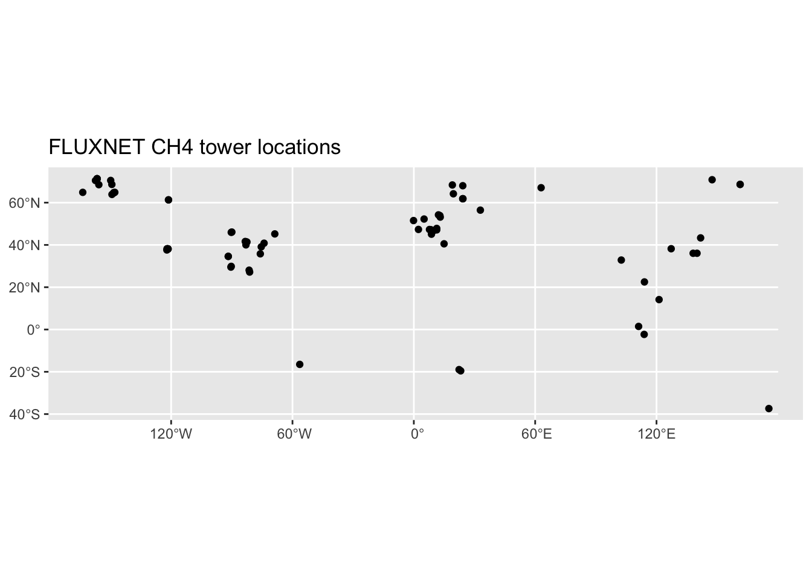
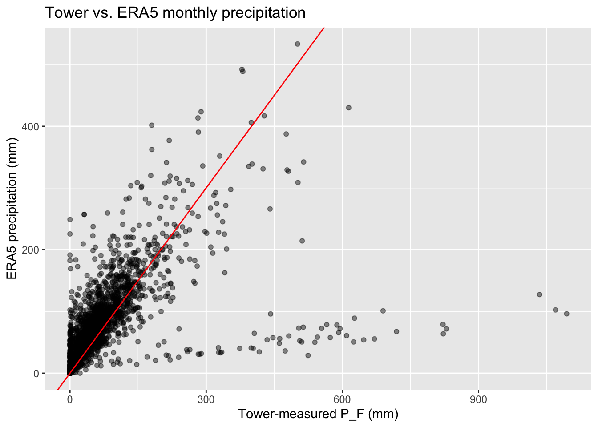
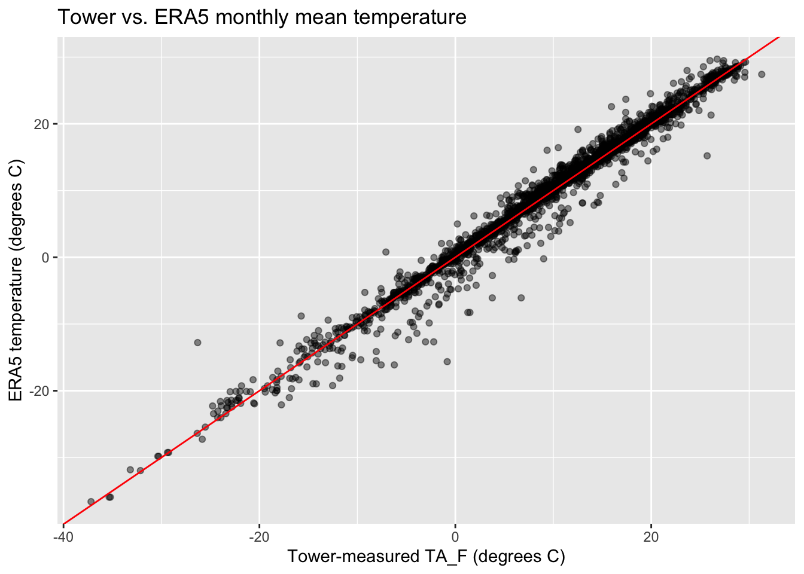
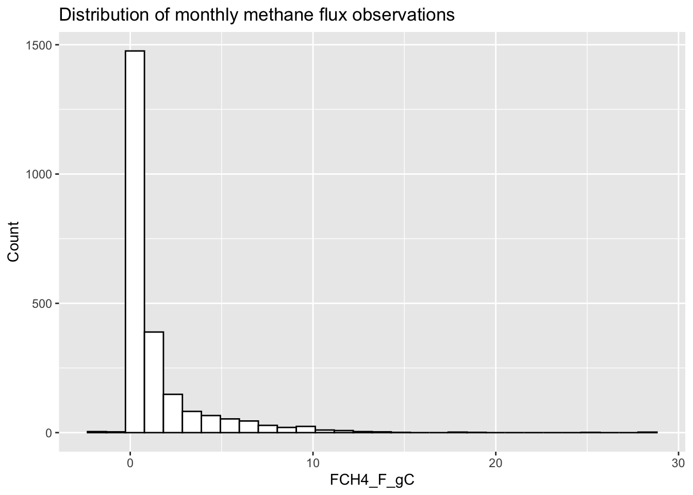
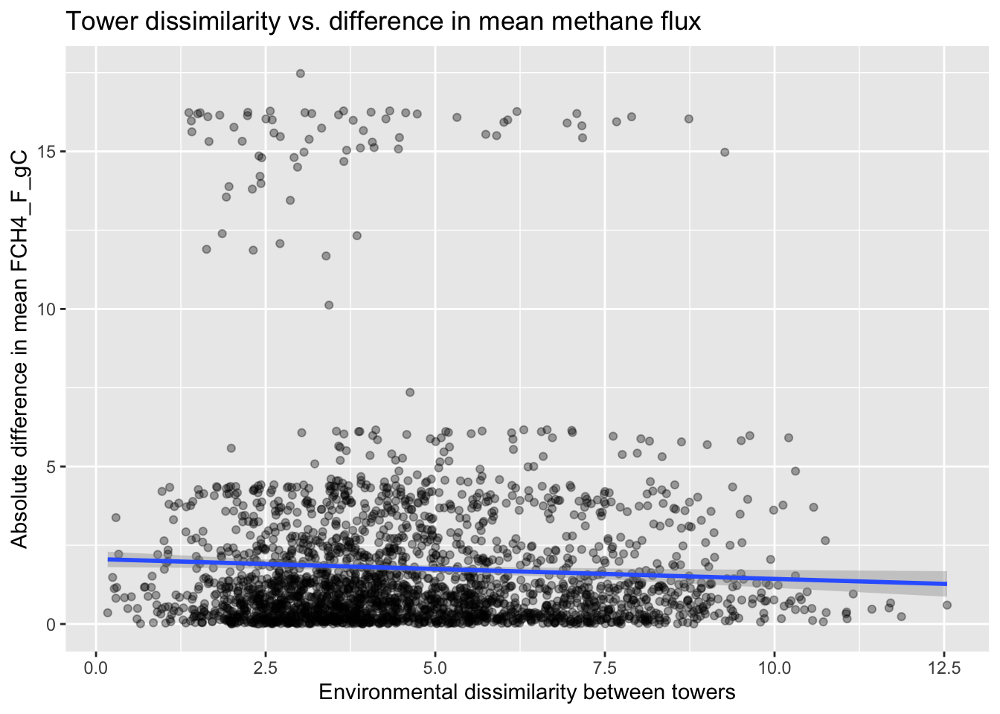
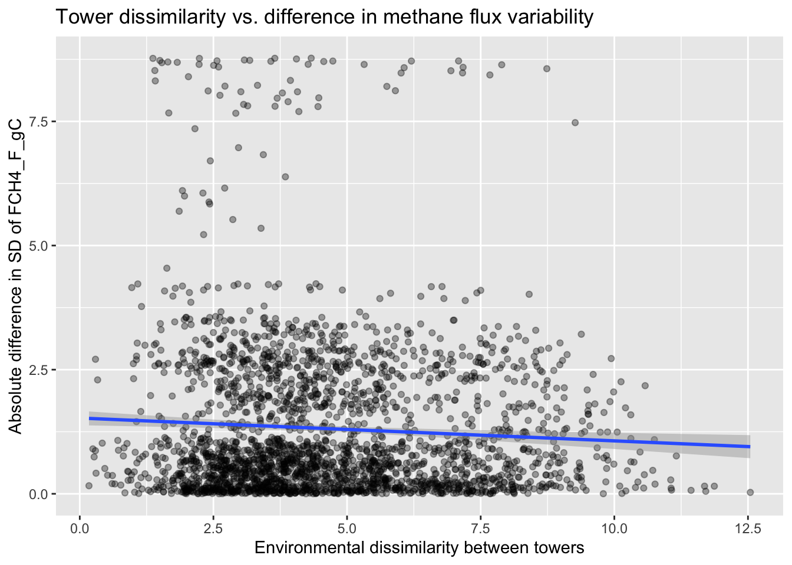

install.packages("ecmwfr")
library(ecmwfr)
wf_set_key(key = "paste-your-personal-access-token-here")Data Integration: Building a Methane Flux Modeling Table
From data sources to a model-ready table
The final course project asks you to build a methane flux model. Before you can fit a model, you need to compile a dataset where each row is a clean observation and each column is a response variable, predictor, or useful descriptor.
In this workshop, we will ask:
How do we combine flux measurements, site metadata, vegetation indices, soil, climate, elevation, and reanalysis data into one table that can be used to model methane flux?
The target data product is a site-month modeling table:
- one row = one tower site in one month;
- response = methane flux (
FCH4_F_gC); - dynamic predictors = monthly tower climate, MODIS vegetation indices, ERA5 climate;
- static predictors = ecosystem type, country, soil, climate normals, elevation.
By the end of this workshop, you will be able to:
- Identify whether a data source is tabular, vector, or raster.
- Identify whether a predictor is static or dynamic.
- Choose join keys for site-only and site-time datasets.
- Extract raster values to tower locations.
- Join static site attributes to monthly observations.
- Join dynamic monthly predictors by
SITE_IDandYearMon. - Check joins for missing values, duplicate keys, and row-count changes.
- Save a model-ready methane flux dataset.
Data inventory
Before writing code, make a data inventory. Every predictor you use in a model should have a source, units, spatial/temporal resolution, and join key.
| Source | Data Type | Static or Dynamic? | What It Adds | Join Key |
|---|---|---|---|---|
FluxNet_Sites_2024.csv |
Tabular points | Static | site location, ecosystem type, site MAT/MAP | SITE_ID |
GlobalSoil_grids.tif |
Raster | Static | soil bulk density, pH, nitrogen | location |
GlobalClimate.tif |
Raster | Static | climate normals | location |
Elevation.tif |
Raster | Static | elevation | location |
ENV720-MOD13A3-061-results.csv |
Tabular remote sensing | Dynamic monthly | NDVI, EVI | SITE_ID, YearMon |
FLUXNET_FLUXES.RDATA |
Tabular flux | Dynamic monthly | methane flux response, tower meteorology | SITE_ID, YearMon |
| ERA5 rasters | Raster reanalysis | Dynamic monthly | gridded precipitation and air temperature | location, YearMon |
Static versus dynamic predictors
Static predictors describe a site and can be repeated across months. Dynamic predictors change through time and must be joined by both site and time. Accidentally joining monthly data only by SITE_ID is one of the easiest ways to create duplicated or incorrect model data.
Getting a Climate Data Store (CDS) API key
Later in this workshop, we will use ERA5 monthly climate data from the Copernicus Climate Data Store (CDS). This requires a free personal account and API key.
- Create a free account at https://cds.climate.copernicus.eu/.
- Once logged in, open your user profile page and copy your Personal Access Token.
- Register it once per computer:
Never save your API key in a script
Type your key directly into the R console, not into a .qmd file you save or push to GitHub. Treat it like a password.
Load libraries
library(sf)
library(terra)
library(tidyverse)
library(ggplot2)
library(rnaturalearth)
library(zoo)
library(lubridate)Helper checks for joins
We will use a few small checks repeatedly. These are habits you should use in your final project.
count_missing <- function(data) {
tibble(variable = names(data),
missing_count = vapply(data, function(x) sum(is.na(x)), integer(1))) %>%
arrange(desc(missing_count))
}Check for duplicate keys:
find_duplicate_keys <- function(data, ...) {
data %>%
count(..., name = "n") %>%
filter(n > 1)
}Static site table
Import the FLUXNET site table:
fluxnet_sites <- read.csv("data/FluxNet_Sites_2024.csv")Keep sites with methane data and valid coordinates:
fluxnet_ch4 <- fluxnet_sites %>%
filter(FLUXNET.CH4 != "",
!is.na(LOCATION_LONG),
!is.na(LOCATION_LAT))
nrow(fluxnet_sites)[1] 268nrow(fluxnet_ch4)[1] 81Convert the methane site table to a simple feature object:
fluxnet_ch4_sf <- st_as_sf(x = fluxnet_ch4,
coords = c("LOCATION_LONG", "LOCATION_LAT"),
crs = 4326,
remove = FALSE)
ggplot(data = fluxnet_ch4_sf) +
geom_sf() +
labs(title = "FLUXNET CH4 tower locations")
Add country and continent
Country and continent are static site attributes. We get them by spatially joining tower points to country polygons.
world_sf <- ne_countries(scale = "medium", returnclass = "sf") %>%
filter(continent %in% c("Europe", "Asia", "North America",
"South America", "Africa", "Oceania")) %>%
st_make_valid()
world_context <- world_sf %>%
select(country = name, continent, geometry)
fluxnet_ch4_sf <- fluxnet_ch4_sf %>%
st_join(world_context, join = st_within)Check the new attributes:
fluxnet_ch4_sf %>%
st_drop_geometry() %>%
select(SITE_ID, SITE_NAME, country, continent) %>%
head() SITE_ID SITE_NAME country continent
1 AT-Neu Neustift Austria Europe
2 BR-Npw Northern Pantanal Wetland Brazil South America
3 BW-Gum Guma Botswana Africa
4 BW-Nxr Nxaraga Botswana Africa
5 CA-SCB Scotty Creek Bog Canada North America
6 CA-SCC Scotty Creek Landscape Canada North AmericaExtract static raster predictors
Static raster predictors are joined by location. We will extract soil, climate normals, and elevation to each tower point.
Soil
soil <- terra::rast("data/GlobalSoil_grids.tif")
names(soil)[1] "BulkDensity" "PH" "Nitrogen" Transform the tower points to the raster CRS, then extract:
fluxnet_ch4_soil <- st_transform(fluxnet_ch4_sf, crs = crs(soil))
soil_values <- terra::extract(soil, vect(fluxnet_ch4_soil)) %>%
select(-ID) %>%
rename(soil_bulk_density = BulkDensity,
soil_ph = PH,
soil_nitrogen = Nitrogen)Climate normals
climate <- terra::rast("data/GlobalClimate.tif")
names(climate)[1] "MAP" "TMIN" "TMAX" "MAT" fluxnet_ch4_climate <- st_transform(fluxnet_ch4_sf, crs = crs(climate))
climate_values <- terra::extract(climate, vect(fluxnet_ch4_climate)) %>%
select(-ID) %>%
rename(climate_map = MAP,
climate_tmin = TMIN,
climate_tmax = TMAX,
climate_mat = MAT)Elevation
elevation <- terra::rast("data/Elevation.tif")
names(elevation)[1] "wc2.1_2.5m_elev"fluxnet_ch4_elevation <- st_transform(fluxnet_ch4_sf, crs = crs(elevation))
elevation_values <- terra::extract(elevation, vect(fluxnet_ch4_elevation)) %>%
select(-ID) %>%
rename(elevation_m = wc2.1_2.5m_elev)Build the static site table
Combine the site metadata and static raster values:
site_static <- fluxnet_ch4_sf %>%
st_drop_geometry() %>%
bind_cols(soil_values, climate_values, elevation_values)Keep one row per site:
site_static <- site_static %>%
distinct(SITE_ID, .keep_all = TRUE)
find_duplicate_keys(site_static, SITE_ID)[1] SITE_ID n
<0 rows> (or 0-length row.names)Inspect missing values:
site_static %>%
select(SITE_ID, IGBP, country, continent,
soil_bulk_density, soil_ph, soil_nitrogen,
climate_map, climate_mat, elevation_m) %>%
count_missing() %>%
head(15)# A tibble: 10 × 2
variable missing_count
<chr> <int>
1 country 3
2 continent 3
3 soil_bulk_density 2
4 soil_ph 2
5 soil_nitrogen 2
6 SITE_ID 0
7 IGBP 0
8 climate_map 0
9 climate_mat 0
10 elevation_m 0Dynamic monthly vegetation predictors
MODIS NDVI and EVI are monthly predictors. Their join key must include both SITE_ID and YearMon.
modis_vi <- read.csv("data/ENV720-MOD13A3-061-results.csv")
names(modis_vi) [1] "ID"
[2] "Latitude"
[3] "Longitude"
[4] "Date"
[5] "MODIS_Tile"
[6] "MOD13A3_061_Line_Y_1km"
[7] "MOD13A3_061_Sample_X_1km"
[8] "MOD13A3_061__1_km_monthly_EVI"
[9] "MOD13A3_061__1_km_monthly_NDVI"
[10] "MOD13A3_061__1_km_monthly_VI_Quality"
[11] "MOD13A3_061__1_km_monthly_VI_Quality_bitmask"
[12] "MOD13A3_061__1_km_monthly_VI_Quality_MODLAND"
[13] "MOD13A3_061__1_km_monthly_VI_Quality_MODLAND_Description"
[14] "MOD13A3_061__1_km_monthly_VI_Quality_VI_Usefulness"
[15] "MOD13A3_061__1_km_monthly_VI_Quality_VI_Usefulness_Description"
[16] "MOD13A3_061__1_km_monthly_VI_Quality_Aerosol_Quantity"
[17] "MOD13A3_061__1_km_monthly_VI_Quality_Aerosol_Quantity_Description"
[18] "MOD13A3_061__1_km_monthly_VI_Quality_Adjacent_cloud_detected"
[19] "MOD13A3_061__1_km_monthly_VI_Quality_Adjacent_cloud_detected_Description"
[20] "MOD13A3_061__1_km_monthly_VI_Quality_Atmosphere_BRDF_Correction"
[21] "MOD13A3_061__1_km_monthly_VI_Quality_Atmosphere_BRDF_Correction_Description"
[22] "MOD13A3_061__1_km_monthly_VI_Quality_Mixed_Clouds"
[23] "MOD13A3_061__1_km_monthly_VI_Quality_Mixed_Clouds_Description"
[24] "MOD13A3_061__1_km_monthly_VI_Quality_Land.Water_Mask"
[25] "MOD13A3_061__1_km_monthly_VI_Quality_Land.Water_Mask_Description"
[26] "MOD13A3_061__1_km_monthly_VI_Quality_Possible_snow.ice"
[27] "MOD13A3_061__1_km_monthly_VI_Quality_Possible_snow.ice_Description"
[28] "MOD13A3_061__1_km_monthly_VI_Quality_Possible_shadow"
[29] "MOD13A3_061__1_km_monthly_VI_Quality_Possible_shadow_Description" Prepare the MODIS table:
fluxnet_vi_monthly <- modis_vi %>%
select(ID,
Date,
MOD13A3_061__1_km_monthly_EVI,
MOD13A3_061__1_km_monthly_NDVI,
MOD13A3_061__1_km_monthly_VI_Quality) %>%
rename(SITE_ID = ID,
EVI = MOD13A3_061__1_km_monthly_EVI,
NDVI = MOD13A3_061__1_km_monthly_NDVI,
QAQC = MOD13A3_061__1_km_monthly_VI_Quality) %>%
mutate(date_formatted = as.Date(Date),
YearMon = zoo::as.yearmon(date_formatted)) %>%
filter(QAQC > 0) %>%
distinct(SITE_ID, YearMon, .keep_all = TRUE)Check the keys:
find_duplicate_keys(fluxnet_vi_monthly, SITE_ID, YearMon)[1] SITE_ID YearMon n
<0 rows> (or 0-length row.names)range(fluxnet_vi_monthly$YearMon)[1] "Jan 2006" "Dec 2018"Monthly flux data
Load the monthly flux dataset. This contains the response variable and tower-measured monthly meteorology.
load("data/FLUXNET_FLUXES.RDATA")
fluxnet_flux <- FLUXNET.fluxCreate SITE_ID and inspect the time range:
fluxnet_flux <- fluxnet_flux %>%
mutate(SITE_ID = SITE)
range(fluxnet_flux$YearMon)[1] "Jan 2006" "Dec 2018"names(fluxnet_flux)[1] "YearMon" "SITE" "P_F" "TA_F" "VPD_F" "NEE_F_gC"
[7] "FCH4_F_gC" "SITE_ID" Check whether SITE_ID + YearMon uniquely identifies rows:
find_duplicate_keys(fluxnet_flux, SITE_ID, YearMon)# A tibble: 0 × 3
# Groups: YearMon [0]
# ℹ 3 variables: YearMon <yearmon>, SITE_ID <chr>, n <int>Join dynamic predictors
Start with the flux data, then join MODIS by SITE_ID and YearMon.
before_rows <- nrow(fluxnet_flux)
flux_month_vi <- fluxnet_flux %>%
left_join(fluxnet_vi_monthly, by = c("SITE_ID", "YearMon"))
after_rows <- nrow(flux_month_vi)
before_rows[1] 2370after_rows[1] 2370Check for flux rows that did not receive MODIS data:
flux_month_vi %>%
summarize(missing_ndvi = sum(is.na(NDVI)),
missing_evi = sum(is.na(EVI)),
total_rows = n())# A tibble: 156 × 4
YearMon missing_ndvi missing_evi total_rows
<yearmon> <int> <int> <int>
1 Jan 2006 0 0 1
2 Feb 2006 0 0 1
3 Mar 2006 0 0 1
4 Apr 2006 0 0 1
5 May 2006 0 0 1
6 Jun 2006 0 0 1
7 Jul 2006 0 0 1
8 Aug 2006 0 0 1
9 Sep 2006 0 0 1
10 Oct 2006 0 0 1
# ℹ 146 more rowsUse anti_join() to inspect unmatched keys:
fluxnet_flux %>%
anti_join(fluxnet_vi_monthly, by = c("SITE_ID", "YearMon")) %>%
count(SITE_ID, sort = TRUE) %>%
head()# A tibble: 6 × 3
# Groups: YearMon [3]
YearMon SITE_ID n
<yearmon> <chr> <int>
1 Dec 2013 US-Atq 1
2 Dec 2013 US-Beo 1
3 Dec 2013 US-Bes 1
4 Dec 2014 US-Beo 1
5 Dec 2015 US-Atq 1
6 Dec 2015 US-Bes 1Join static site predictors to monthly rows
Static site attributes join by SITE_ID only. This repeats each site’s static values across all months for that site.
site_static_for_join <- site_static %>%
select(SITE_ID, SITE_NAME, IGBP, country, continent,
LOCATION_LAT, LOCATION_LONG, LOCATION_ELEV,
soil_bulk_density, soil_ph, soil_nitrogen,
climate_map, climate_tmin, climate_tmax, climate_mat,
elevation_m)Join site attributes to the monthly table:
before_rows <- nrow(flux_month_vi)
flux_model_base <- flux_month_vi %>%
left_join(site_static_for_join, by = "SITE_ID")
after_rows <- nrow(flux_model_base)
before_rows[1] 2370after_rows[1] 2370Check which flux rows did not receive site metadata:
flux_model_base %>%
filter(is.na(IGBP)) %>%
count(SITE_ID, sort = TRUE) %>%
head()# A tibble: 0 × 3
# Groups: YearMon [0]
# ℹ 3 variables: YearMon <yearmon>, SITE_ID <chr>, n <int>ERA5 monthly reanalysis data
The static climate layer (GlobalClimate.tif) gives each site one long-term average. ERA5 gives monthly climate values that can be joined to site-month flux rows.
The download workflow is shown below, but the course data folder already includes processed ERA5 rasters:
data/products/era5_ppt_monthly.tifdata/products/era5_tmean_monthly.tif
Download ERA5 data
library(ecmwfr)
era5_years <- 2006:2018
era5_requests <- lapply(era5_years, function(yr) {
list(
dataset_short_name = "reanalysis-era5-single-levels-monthly-means",
product_type = "monthly_averaged_reanalysis",
variable = c("2m_temperature", "total_precipitation"),
year = as.character(yr),
month = sprintf("%02d", 1:12),
time = "00:00",
data_format = "netcdf",
target = paste0("era5_", yr, ".nc")
)
})
era5_dir <- file.path("data", "products", "era5")
dir.create(era5_dir, showWarnings = FALSE, recursive = TRUE)
wf_request_batch(request_list = era5_requests,
workers = 2,
retry = 30,
user = "ecmwfr",
path = era5_dir)
Why we use the processed rasters below
ERA5 downloads depend on an external account, API key, and queue. For this workshop, we use processed rasters that have already been downloaded and converted to the right units so the data integration workflow is reproducible in class.
Extract ERA5 values to tower sites
Read the processed monthly ERA5 rasters:
era5_ppt_monthly <- rast("data/products/era5_ppt_monthly.tif")
era5_tmean_monthly <- rast("data/products/era5_tmean_monthly.tif")
nlyr(era5_ppt_monthly)[1] 156nlyr(era5_tmean_monthly)[1] 156Name each layer by YearMon:
names(era5_ppt_monthly) <- as.character(zoo::as.yearmon(names(era5_ppt_monthly)))
names(era5_tmean_monthly) <- as.character(zoo::as.yearmon(names(era5_tmean_monthly)))Transform tower points and extract monthly values:
fluxnet_ch4_era5 <- st_transform(fluxnet_ch4_sf, crs = crs(era5_ppt_monthly))
era5_ppt_long <- terra::extract(era5_ppt_monthly, vect(fluxnet_ch4_era5), ID = FALSE) %>%
mutate(SITE_ID = fluxnet_ch4_era5$SITE_ID) %>%
pivot_longer(-SITE_ID, names_to = "YearMon", values_to = "era5_p_f") %>%
mutate(YearMon = zoo::as.yearmon(YearMon))
era5_tmean_long <- terra::extract(era5_tmean_monthly, vect(fluxnet_ch4_era5), ID = FALSE) %>%
mutate(SITE_ID = fluxnet_ch4_era5$SITE_ID) %>%
pivot_longer(-SITE_ID, names_to = "YearMon", values_to = "era5_ta_f") %>%
mutate(YearMon = zoo::as.yearmon(YearMon))
era5_monthly <- era5_ppt_long %>%
left_join(era5_tmean_long, by = c("SITE_ID", "YearMon"))Check the ERA5 key:
find_duplicate_keys(era5_monthly, SITE_ID, YearMon)# A tibble: 0 × 3
# ℹ 3 variables: SITE_ID <chr>, YearMon <yearmon>, n <int>range(era5_monthly$YearMon)[1] "Jan 2006" "Dec 2018"Join ERA5 onto the modeling table:
before_rows <- nrow(flux_model_base)
flux_model_era5 <- flux_model_base %>%
left_join(era5_monthly, by = c("SITE_ID", "YearMon"))
after_rows <- nrow(flux_model_era5)
before_rows[1] 2370after_rows[1] 2370Validate ERA5 against tower measurements
Compare tower-measured precipitation (P_F) with ERA5 precipitation:
ggplot(flux_model_era5, aes(x = P_F, y = era5_p_f)) +
geom_point(alpha = 0.45) +
geom_abline(slope = 1, intercept = 0, col = "red") +
labs(title = "Tower vs. ERA5 monthly precipitation",
x = "Tower-measured P_F (mm)",
y = "ERA5 precipitation (mm)")
cor(flux_model_era5$P_F, flux_model_era5$era5_p_f, use = "complete.obs")[1] 0.5475576Compare tower-measured air temperature (TA_F) with ERA5 temperature:
ggplot(flux_model_era5, aes(x = TA_F, y = era5_ta_f)) +
geom_point(alpha = 0.45) +
geom_abline(slope = 1, intercept = 0, col = "red") +
labs(title = "Tower vs. ERA5 monthly mean temperature",
x = "Tower-measured TA_F (degrees C)",
y = "ERA5 temperature (degrees C)")
cor(flux_model_era5$TA_F, flux_model_era5$era5_ta_f, use = "complete.obs")[1] 0.9889273A tower measures its immediate surroundings. ERA5 represents average conditions across a much larger grid cell. Expect closer agreement for temperature than precipitation. This is the kind of check you should do before trusting a reanalysis product as a predictor or substitute for missing observations.
Build the model-ready table
Now select the response variable, candidate predictors, and useful identifiers. This creates a table that is ready for exploratory modeling.
methane_model_data <- flux_model_era5 %>%
select(SITE_ID, SITE_NAME, YearMon,
FCH4_F_gC,
P_F, TA_F, VPD_F,
NDVI, EVI,
IGBP, country, continent,
soil_ph, soil_nitrogen, soil_bulk_density,
climate_map, climate_tmin, climate_tmax, climate_mat,
elevation_m,
era5_p_f, era5_ta_f) %>%
filter(!is.na(FCH4_F_gC))Inspect the table:
glimpse(methane_model_data)Rows: 2,370
Columns: 22
Groups: YearMon [156]
$ SITE_ID <chr> "FI-Lom", "FI-Lom", "FI-Lom", "FI-Lom", "FI-Lom", "I…
$ SITE_NAME <chr> "Lompolojankka", "Lompolojankka", "Lompolojankka", "…
$ YearMon <yearmon> Jan 2006, Jan 2007, Jan 2008, Jan 2009, Jan 2010…
$ FCH4_F_gC <dbl> 0.295321420, 0.387999148, 0.302821587, 0.362427806, …
$ P_F <dbl> 282.672, 539.435, 461.321, 131.578, 334.310, 59.800,…
$ TA_F <dbl> -11.6205168, -13.7393918, -8.8871801, -11.0538978, -…
$ VPD_F <dbl> 0.3030585, 0.1547117, 0.2917641, 0.3035800, 0.197970…
$ NDVI <dbl> -3000.0000, -3000.0000, -3000.0000, -3000.0000, -300…
$ EVI <dbl> -3000.0000, -3000.0000, -3000.0000, -3000.0000, -300…
$ IGBP <chr> "WET", "WET", "WET", "WET", "WET", "CRO", "GRA", "CR…
$ country <chr> "Finland", "Finland", "Finland", "Finland", "Finland…
$ continent <chr> "Europe", "Europe", "Europe", "Europe", "Europe", "E…
$ soil_ph <dbl> 4.8, 4.8, 4.8, 4.8, 4.8, 6.7, 7.0, 6.1, 5.9, 6.9, 5.…
$ soil_nitrogen <dbl> 9.5, 9.5, 9.5, 9.5, 9.5, 5.5, 6.3, 8.3, 8.8, 6.9, 6.…
$ soil_bulk_density <dbl> 0.6, 0.6, 0.6, 0.6, 0.6, 1.2, 1.2, 1.2, 1.0, 1.2, 1.…
$ climate_map <dbl> 551.0, 551.0, 551.0, 551.0, 551.0, 715.0, 346.8, 377…
$ climate_tmin <dbl> -17.8, -17.8, -17.8, -17.8, -17.8, -2.3, 3.6, 3.2, -…
$ climate_tmax <dbl> 18.0, 18.0, 18.0, 18.0, 18.0, 29.4, 30.9, 31.2, 19.6…
$ climate_mat <dbl> -0.9458333, -0.9458333, -0.9458333, -0.9458333, -0.9…
$ elevation_m <int> 320, 320, 320, 320, 320, 84, 4, -4, 1445, 2, 473, -4…
$ era5_p_f <dbl> 30.80559, 50.08125, 48.36655, 20.39909, 33.93936, 82…
$ era5_ta_f <dbl> -10.5637875, -13.6789913, -8.1137447, -10.4322872, -…nrow(methane_model_data)[1] 2370n_distinct(methane_model_data$SITE_ID)[1] 73range(methane_model_data$YearMon)[1] "Jan 2006" "Dec 2018"Data quality dashboard
Check missingness:
methane_model_data %>%
count_missing() %>%
head(25)# A tibble: 22 × 2
variable missing_count
<chr> <int>
1 country 177
2 continent 177
3 soil_ph 39
4 soil_nitrogen 39
5 soil_bulk_density 39
6 NDVI 8
7 EVI 8
8 SITE_ID 0
9 SITE_NAME 0
10 YearMon 0
# ℹ 12 more rowsCheck duplicate site-month rows:
find_duplicate_keys(methane_model_data, SITE_ID, YearMon)# A tibble: 0 × 3
# Groups: YearMon [0]
# ℹ 3 variables: YearMon <yearmon>, SITE_ID <chr>, n <int>Check which sites have the most complete model records:
methane_model_data %>%
mutate(complete_predictors = complete.cases(P_F, TA_F, VPD_F,
NDVI, EVI,
soil_ph, soil_nitrogen,
climate_map, climate_mat,
elevation_m,
era5_p_f, era5_ta_f)) %>%
ungroup() %>%
reframe(.by = SITE_ID,
total_rows = n(),
complete_rows = sum(complete_predictors),
complete_fraction = complete_rows / total_rows) %>%
arrange(desc(complete_fraction), desc(complete_rows)) %>%
head(15)# A tibble: 15 × 4
SITE_ID total_rows complete_rows complete_fraction
<chr> <int> <int> <dbl>
1 US-Myb 99 99 1
2 US-PFa 97 97 1
3 US-Twt 95 95 1
4 DE-Hte 87 87 1
5 US-Ho1 73 73 1
6 DE-Zrk 64 64 1
7 FI-Sii 62 62 1
8 US-Los 61 61 1
9 FI-Lom 60 60 1
10 US-NC4 60 60 1
11 SE-Deg 54 54 1
12 US-ORv 51 51 1
13 US-Uaf 50 50 1
14 CH-Cha 49 49 1
15 NZ-Kop 49 49 1Visualize the response variable:
ggplot(methane_model_data, aes(x = FCH4_F_gC)) +
geom_histogram(color = "black", fill = "white") +
labs(title = "Distribution of monthly methane flux observations",
x = "FCH4_F_gC",
y = "Count")`stat_bin()` using `bins = 30`. Pick better value `binwidth`.
Flux summaries and tower dissimilarity
A useful modeling dataset should help us ask whether towers that are environmentally similar also behave similarly. Here, we summarize methane fluxes by tower and compare those summaries to tower dissimilarity based on integrated predictor data.
First, compute the mean and variability of methane flux for each tower:
tower_flux_summary <- methane_model_data %>%
ungroup() %>%
reframe(.by = c(SITE_ID, SITE_NAME, IGBP, country, continent),
n_months = sum(!is.na(FCH4_F_gC)),
mean_flux = mean(FCH4_F_gC, na.rm = TRUE),
sd_flux = sd(FCH4_F_gC, na.rm = TRUE),
flux_cv = sd_flux / abs(mean_flux))Look at the sites with the highest mean methane flux:
tower_flux_summary %>%
arrange(desc(mean_flux)) %>%
head(10)# A tibble: 10 × 9
SITE_ID SITE_NAME IGBP country continent n_months mean_flux sd_flux flux_cv
<chr> <chr> <chr> <chr> <chr> <int> <dbl> <dbl> <dbl>
1 US-OWC Old Woman… WET United… North Am… 11 16.3 8.78 0.540
2 JP-SwL Suwa Lake WAT Japan Asia 7 9.54 3.92 0.411
3 BW-Gum Guma WET Botswa… Africa 10 6.15 1.95 0.318
4 US-DPW Disney Wi… WET United… North Am… 41 4.59 3.44 0.748
5 DE-Hte Huetelmoor WET Germany Europe 87 4.41 3.56 0.808
6 US-WPT Winous Po… WET United… North Am… 34 4.38 4.24 0.968
7 UK-LBT London_BT URB United… Europe 32 4.28 1.46 0.342
8 US-LA2 Salvador … WET United… North Am… 22 4.20 2.63 0.626
9 BW-Nxr Nxaraga GRA Botswa… Africa 12 3.95 2.40 0.608
10 US-Myb Mayberry … WET <NA> <NA> 99 3.88 3.09 0.797Look at the sites with the most variable methane flux:
tower_flux_summary %>%
arrange(desc(sd_flux)) %>%
head(10)# A tibble: 10 × 9
SITE_ID SITE_NAME IGBP country continent n_months mean_flux sd_flux flux_cv
<chr> <chr> <chr> <chr> <chr> <int> <dbl> <dbl> <dbl>
1 US-OWC "Old Woma… WET United… North Am… 11 16.3 8.78 0.540
2 US-WPT "Winous P… WET United… North Am… 34 4.38 4.24 0.968
3 JP-SwL "Suwa Lak… WAT Japan Asia 7 9.54 3.92 0.411
4 DE-Hte "Huetelmo… WET Germany Europe 87 4.41 3.56 0.808
5 US-DPW "Disney W… WET United… North Am… 41 4.59 3.44 0.748
6 US-NC4 "NC_Allig… WET United… North Am… 60 2.83 3.26 1.15
7 US-Myb "Mayberry… WET <NA> <NA> 99 3.88 3.09 0.797
8 US-HRC "Humnoke … CRO United… North Am… 5 2.29 2.95 1.29
9 IT-Cas "Castella… CRO Italy Europe 21 2.06 2.91 1.41
10 KR-CRK "Cheorwon… CRO South … Asia 43 2.39 2.79 1.17 Create one predictor summary per tower. Static variables such as soil and elevation are repeated across months, while dynamic variables such as NDVI, precipitation, and temperature are summarized across the available monthly record:
tower_predictor_summary <- methane_model_data %>%
ungroup() %>%
reframe(.by = SITE_ID,
mean_p_f = mean(P_F, na.rm = TRUE),
mean_ta_f = mean(TA_F, na.rm = TRUE),
mean_vpd_f = mean(VPD_F, na.rm = TRUE),
mean_ndvi = mean(NDVI, na.rm = TRUE),
mean_evi = mean(EVI, na.rm = TRUE),
mean_era5_p_f = mean(era5_p_f, na.rm = TRUE),
mean_era5_ta_f = mean(era5_ta_f, na.rm = TRUE),
soil_ph = first(soil_ph),
soil_nitrogen = first(soil_nitrogen),
soil_bulk_density = first(soil_bulk_density),
climate_map = first(climate_map),
climate_mat = first(climate_mat),
elevation_m = first(elevation_m))Join flux summaries and predictor summaries:
tower_summary <- tower_flux_summary %>%
left_join(tower_predictor_summary, by = "SITE_ID")Calculate environmental dissimilarity among towers using standardized predictors. Standardizing puts all variables on comparable scales before calculating distance:
dissimilarity_vars <- c("mean_p_f", "mean_ta_f", "mean_vpd_f",
"mean_ndvi", "mean_evi",
"mean_era5_p_f", "mean_era5_ta_f",
"soil_ph", "soil_nitrogen", "soil_bulk_density",
"climate_map", "climate_mat", "elevation_m")
tower_dissimilarity_input <- tower_summary %>%
select(SITE_ID, SITE_NAME, IGBP, mean_flux, sd_flux, all_of(dissimilarity_vars)) %>%
drop_na()
scaled_predictors <- tower_dissimilarity_input %>%
select(all_of(dissimilarity_vars)) %>%
scale()
tower_dissimilarity <- dist(scaled_predictors)Find each tower’s nearest environmental neighbor:
dissimilarity_matrix <- as.matrix(tower_dissimilarity)
diag(dissimilarity_matrix) <- NA
nearest_neighbor_index <- apply(dissimilarity_matrix, 1, which.min)
nearest_tower_summary <- tower_dissimilarity_input %>%
mutate(nearest_SITE_ID = tower_dissimilarity_input$SITE_ID[nearest_neighbor_index],
nearest_SITE_NAME = tower_dissimilarity_input$SITE_NAME[nearest_neighbor_index],
nearest_dissimilarity = dissimilarity_matrix[cbind(seq_len(nrow(dissimilarity_matrix)),
nearest_neighbor_index)])
nearest_tower_summary %>%
select(SITE_ID, SITE_NAME, IGBP,
nearest_SITE_ID, nearest_SITE_NAME, nearest_dissimilarity,
mean_flux, sd_flux) %>%
arrange(nearest_dissimilarity) %>%
head(10)# A tibble: 10 × 8
SITE_ID SITE_NAME IGBP nearest_SITE_ID nearest_SITE_NAME
<chr> <chr> <chr> <chr> <chr>
1 US-BZB "Bonanza Creek Thermokarst B… WET US-BZF "Bonanza Creek R…
2 US-BZF "Bonanza Creek Rich Fen" WET US-BZB "Bonanza Creek T…
3 US-BZS "Bonanza Creek Black Spruce" ENF US-BZF "Bonanza Creek R…
4 US-HRA "Humnoke Farm Rice Field \xd… CRO US-HRC "Humnoke Farm Ri…
5 US-HRC "Humnoke Farm Rice Field \xd… CRO US-HRA "Humnoke Farm Ri…
6 US-Snd "Sherman Island" GRA US-Myb "Mayberry Wetlan…
7 US-Myb "Mayberry Wetland" WET US-Snd "Sherman Island"
8 US-Sne "Sherman Island Restored Wet… GRA US-Myb "Mayberry Wetlan…
9 US-Twt "Twitchell Island" CRO US-Bi2 "Bouldin Island …
10 US-Bi2 "Bouldin Island corn" CRO US-Twt "Twitchell Islan…
# ℹ 3 more variables: nearest_dissimilarity <dbl>, mean_flux <dbl>,
# sd_flux <dbl>Create a pairwise comparison table. Each row compares two towers:
tower_pairs <- as.data.frame(as.table(dissimilarity_matrix)) %>%
rename(site_1_index = Var1,
site_2_index = Var2,
environmental_dissimilarity = Freq) %>%
mutate(site_1_index = as.integer(site_1_index),
site_2_index = as.integer(site_2_index)) %>%
filter(site_1_index < site_2_index) %>%
mutate(SITE_ID_1 = tower_dissimilarity_input$SITE_ID[site_1_index],
SITE_ID_2 = tower_dissimilarity_input$SITE_ID[site_2_index],
mean_flux_difference = abs(tower_dissimilarity_input$mean_flux[site_1_index] -
tower_dissimilarity_input$mean_flux[site_2_index]),
sd_flux_difference = abs(tower_dissimilarity_input$sd_flux[site_1_index] -
tower_dissimilarity_input$sd_flux[site_2_index]))Do environmentally similar towers have more similar mean methane flux?
ggplot(tower_pairs,
aes(x = environmental_dissimilarity, y = mean_flux_difference)) +
geom_point(alpha = 0.35) +
geom_smooth(method = "lm") +
labs(title = "Tower dissimilarity vs. difference in mean methane flux",
x = "Environmental dissimilarity between towers",
y = "Absolute difference in mean FCH4_F_gC")`geom_smooth()` using formula = 'y ~ x'
cor(tower_pairs$environmental_dissimilarity,
tower_pairs$mean_flux_difference,
use = "complete.obs")[1] -0.05001592Do environmentally similar towers have more similar flux variability?
ggplot(tower_pairs,
aes(x = environmental_dissimilarity, y = sd_flux_difference)) +
geom_point(alpha = 0.35) +
geom_smooth(method = "lm") +
labs(title = "Tower dissimilarity vs. difference in methane flux variability",
x = "Environmental dissimilarity between towers",
y = "Absolute difference in SD of FCH4_F_gC")`geom_smooth()` using formula = 'y ~ x'
cor(tower_pairs$environmental_dissimilarity,
tower_pairs$sd_flux_difference,
use = "complete.obs")[1] -0.06358746
Interpreting dissimilarity
This is a screening analysis. If environmentally similar towers have similar methane flux means or variability, that supports using these predictors in a model. If they do not, it suggests important drivers may still be missing, such as water table depth, wetland type, soil carbon, disturbance history, or measurement design.
Save your work
Save the model-ready table and the ERA5 rasters needed for the spatial projection workshop:
save(methane_model_data, file = "data/products/methane_model_data.RDATA")
writeRaster(era5_ppt_monthly, "data/products/era5_ppt_monthly.tif", overwrite = TRUE)
writeRaster(era5_tmean_monthly, "data/products/era5_tmean_monthly.tif", overwrite = TRUE)Final project data integration plan
For your final methane model, identify:
- Your response variable.
- Your spatial extent.
- Your temporal resolution.
- At least five candidate predictors.
- The data source for each predictor.
- Whether each predictor is static or dynamic.
- The expected units.
- The join key or extraction method.
- A validation check for each predictor.
Assignment
Submit a 1-2 page Final Project Data Integration Plan. Include:
- A short description of the methane flux question you want to answer.
- A table of at least five candidate predictors with source, units, spatial resolution, temporal resolution, static/dynamic status, and join key.
- One paragraph describing likely missingness, scale mismatch, or join problems.
- A short workflow diagram or pseudocode showing how you will compile your modeling table.
- One validation check you will use before modeling.
- A brief plan for comparing flux mean and variability across sites, including which predictors you would use to calculate tower dissimilarity.